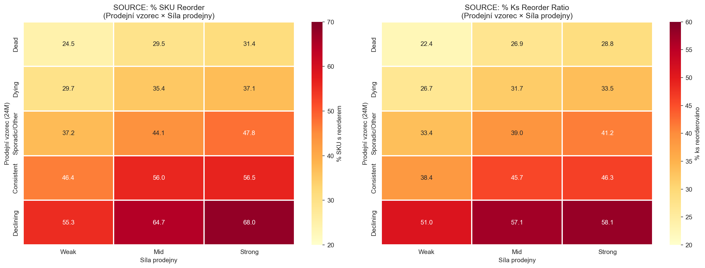
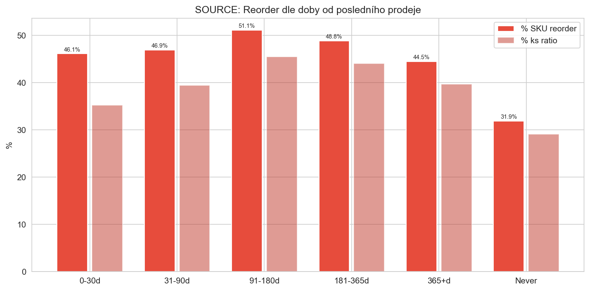
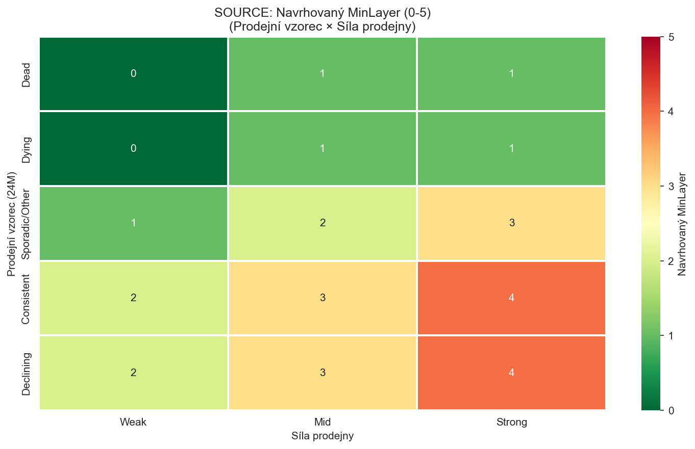
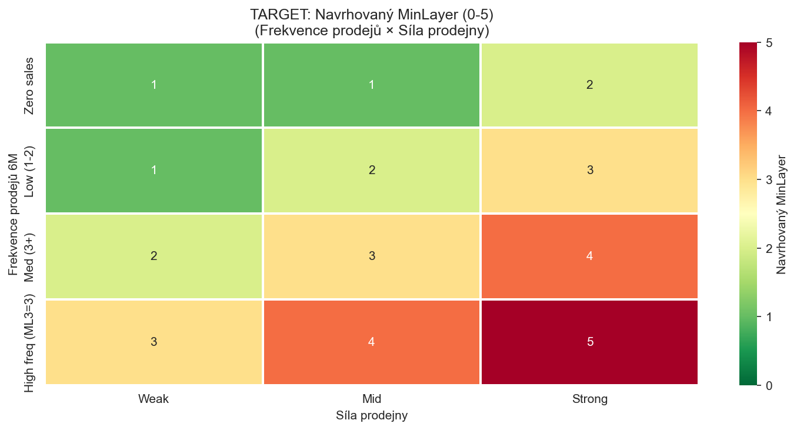

CalculationId=233 | Source a Target pravidla jsou ODLIŠNÁ | 2026-03-22 02:56
Klasifikace SKU do 5 vzorců dle prodejů ve 4 půlročních periodách (A=18-24M, B=12-18M, C=6-12M, D=0-6M):

| Vzorec | Popis | SKU | % reorder (SKU) | % reorder (ks) | Klíčové zjištění |
|---|---|---|---|---|---|
| Dead | 0 prodejů za 24M | 15,625 | 28.5% | 26.1% | Nejbezpečnější – ale přesto 28%! |
| Dying | Prodeje jen v A/B, pak 0 | 6,427 | 34.5% | 31.0% | Umírající, ale 1/3 se vrátí |
| Sporadic | Nepravidelné prodeje | 9,888 | 45.4% | 39.6% | Vysoké riziko – náhodné vzorce |
| Consistent | Prodeje v 3-4 periodách | 3,288 | 55.5% | 44.5% | Pravidelné – NESMÍ se odvézt moc |
| Declining | B>C>D klesající | 1,539 | 65.0% | 56.8% | NEJHORŠÍ! Klesající = stále prodává |


FUNCTION SourceMinLayer(sku, store):
// Klasifikace prodejního vzorce (24M historie)
pattern = ClassifySalesPattern(sku.SalesA, .B, .C, .D) // Dead/Dying/Sporadic/Consistent/Declining
store_tier = ClassifyStore(store.RevenueDecile) // Weak(1-3)/Mid(4-7)/Strong(8-10)
// Lookup tabulka (hlavní pravidlo):
// Weak Mid Strong
// Dead 0 1 1
// Dying 0 1 1
// Sporadic 1 2 3
// Consistent 2 3 4
// Declining 2 3 4
base = LOOKUP_TABLE[pattern][store_tier]
// Modifikátory:
IF sku.SkuClass IN (D, L, R): base = 0 // Delisted → odvézt vše
IF sku.RedistRatio > 0.75: base = MAX(base - 1, 0) // Odvážíme skoro vše
IF sku.BrandStoreFit == 'Strong+Strong': base = MIN(base + 1, 5) // Silný brand v silném obchodě
IF sku.LastSaleGap BETWEEN 91 AND 180d: base = MIN(base + 1, 5) // "Spící" produkt
IF sku.StockoutDays_6M > 90: base = MIN(base + 1, 5) // Phantom stock riziko
RETURN MIN(base, 5)
| Vzorec | Síla prodejny | Aktuální ML (avg) | Navrhovaný ML | SKU | Zdůvodnění |
|---|---|---|---|---|---|
| Dead | Weak | 0.9 | 0 | 4,597 | Nejnižší reorder (24.5%), produkt mrtvý, slabý obchod |
| Dead | Mid | 0.9 | 1 | 6,967 | Nízký reorder (29.5%), ale střední obchod může prodat |
| Dead | Strong | 0.9 | 1 | 4,061 | Reorder 31.4% - silný obchod občas prodá mrtvý produkt |
| Dying | Weak | 0.9 | 0 | 1,594 | Produkt umírá + slabý obchod = bezpečné odvézt |
| Dying | Mid | 0.9 | 1 | 2,882 | Umírající, ale střední obchod = nechej 1 |
| Dying | Strong | 0.9 | 1 | 1,951 | Umírající + silný obchod = 37% reorder, nechej 1 |
| Sporadic/Other | Weak | 1.1 | 1 | 2,003 | Nepravidelný, slabý = nechej 1 |
| Sporadic/Other | Mid | 1.1 | 2 | 4,176 | Nepravidelný, střední = zvýšená ochrana |
| Sporadic/Other | Strong | 1.1 | 3 | 3,712 | Nepravidelný, silný = 47.8% reorder! Silná ochrana |
| Declining | Weak | 1.1 | 2 | 219 | 55.3% reorder! I slabý obchod reorderuje klesající produkt |
| Declining | Mid | 1.1 | 3 | 569 | 64.7% reorder! Vysoká ochrana |
| Declining | Strong | 1.1 | 4 | 751 | 68.0% reorder! Maximální ochrana na silných |
| Consistent | Weak | 1.7 | 2 | 431 | Pravidelný prodejce, slabý obchod |
| Consistent | Mid | 1.7 | 3 | 1,164 | 56% reorder, pravidelný na středním |
| Consistent | Strong | 1.7 | 4 | 1,693 | 56.5% reorder, pravidelný na silném → musí mít hodně |
Target cíl: po redistribuci zůstane alespoň 1 kus. Vyšší MinLayer = více kusů posíláme = větší šance, že 1 zůstane.

FUNCTION TargetMinLayer(sku, store):
freq = sku.Sales6M // Frekvence prodejů
store_tier = ClassifyStore(store.RevenueDecile) // Weak/Mid/Strong
// Lookup tabulka:
// Weak Mid Strong
// Zero (0) 1 1 2
// Low (1-2) 1 2 3
// Medium (3+) 2 3 4
// High (ML3=3 / 7+) 3 4 5
base = LOOKUP_TABLE[freq_bucket][store_tier]
// Modifikátory:
IF sku.SkuClass IN (D, L, R): base = 0 // Delisted → neposílat
IF product.Trend == 'Growing': base = MIN(base + 1, 5) // Rostoucí produkt
RETURN MIN(base, 5)
| Segment | Síla prodejny | Aktuální ML | Navrhovaný ML | SKU | Zdůvodnění |
|---|---|---|---|---|---|
| Zero | Weak | 1 | 1 | - | Slabý obchod, žádné prodeje → nechej minimum. 43.7% nic neprodáno! |
| Zero | Mid | 1 | 1 | - | Střední, žádné prodeje → 1 kus stačí. 39.3% nic neprodáno |
| Zero | Strong | 1 | 2 | - | Silný obchod i se zero-sellers prodá (66.5% all-sold) → potřeba 2 |
| Low(1-2) | Weak | 2 | 1 | - | Slabý + low = 49.9% nic. Snížit na 1! |
| Low(1-2) | Mid | 2 | 2 | - | Střední + low = vyrovnané. OK jako je |
| Low(1-2) | Strong | 2 | 3 | - | Silný + low = 56.2% all-sold → potřeba 3 aby zůstal 1 |
| Med+(3+) | Weak | 2 | 2 | - | Slabý + med = funguje dobře. 63.7% all-sold ale ok |
| Med+(3+) | Mid | 2 | 3 | - | Střední + med = 65.5% all-sold → potřeba 3 |
| Med+(3+) | Strong | 2 | 4 | - | Silný + med = 71.5% all-sold → potřeba 4 aby zůstal 1! |
| Med+(3+) High | Weak | 3 | 3 | - | MinLayer3=3, slabý = 76.4% all-sold ale OK |
| Med+(3+) High | Mid | 3 | 4 | - | MinLayer3=3, střední = 77.8% all-sold → potřeba 4 |
| Med+(3+) High | Strong | 3 | 5 | - | MinLayer3=3, silný = 81.4% all-sold → potřeba 5! |
| Segment | SKU | Aktuální reorder % | Navrhovaný ML | Očekávaný efekt |
|---|---|---|---|---|
| Declining + Strong | 751 | 68.0% | 4 | Tyto SKU by se neredistribuovaly (ML=4 zachová 4ks) → ušetříme ~511 reorderů |
| Consistent + Strong | 1,693 | 56.5% | 4 | ML4 zachová 4ks → méně redistribucí → ušetříme ~956 reorderů |
| Sporadic + Strong | 3,712 | 47.8% | 3 | ML3 zachová 3ks → ušetříme ~500-800 reorderů |
| Dead + všechny | 15,625 | 28.5% | 0-1 | Beze změny (už je nízký ML). Reorder 28% je nevyhnutelný. |
2026-03-22 02:56 | CalculationId=233 | EntityListId=3